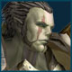

Forums galactiques > Assemblée Galactique : diplomatie officielle > Question et plainte
Pages : 1
| Beth le cerf blanc Respect diplomatique : 112  31/01 ETU 07:13 | Score : 0 Détails (HRP:Alors a t'on le droit de prendre l'intégralité du Natal d'un commandant parce qu'il sois disant chasserai les elfes?)
Plainte:Je porte,plainte contre le commandant Shiyoken pour avoir prit possession de mon Natal sans avertissement Rp et me repondant par enigme au mien.Il n'a répondu franchement qu'une seule fois en m'indiquant le "Conseil Chamanique" en me disant qu'il était comme Grodjirah et chassait les elfes.De la j'ai donc réagit en disant que Grodjirah et moi avons combattu cote a cote et que cela ne l'a pas deranger.(HRP:Et pour finir,je ne suis qu'un animal Elfique et non un elfe...) Attendant une réponse concrète du Primate et une du Commandant Grodjirah. | ||
| Mansfeld Respect diplomatique : 4380  31/01 ETU 07:44 | Score : 16 Détails Redd Bonnett passa dans la salle, en se frappant la tête avec une planche à pain. Ainsi que Dieu le lui avait ordonné, il faisait pénitence... et entamait sa nouvelle carrière de messie.
"Prends pitié Ô SeigneurPAFPrends pitié de nouuuusPAFHosannah ! Hosannah !" La tête déformée par la contrition, il s'arrêta et prit le temps d'écouter le désarroi de Beth. Il lui toucha les escares pour le guérir, lui lava les pattes et lui piqua quelques leems. Pour finir, Redd le rassura quant à son avenir... "...tu vas crever !" La venue de Rasputine bouleversa ses plans. Redd prit la fuite, non sans crier en sortant... "Les elfes c'est comme Verlaine !" | ||
| Grodjirah Respect diplomatique : 256  31/01 ETU 13:08 | Score : 10 Détails Grodjirah avoir combattut a coté de gibier elfique, car lui ignorer que gibier être elfique.
| ||
| Beth le cerf blanc Respect diplomatique : 112 01/02 ETU 07:25 | Score : 0 Détails "Vous ignorez que j'était un elfe?Pour une raison.Je n'en suis pas un.Selon leurs croyances (je crois qu'on peut appeler sa comme sa)je suis un Animal elfique et non n elfe."
|
Pages : 1
Forums galactiques > Assemblée Galactique : diplomatie officielle > Question et plainte